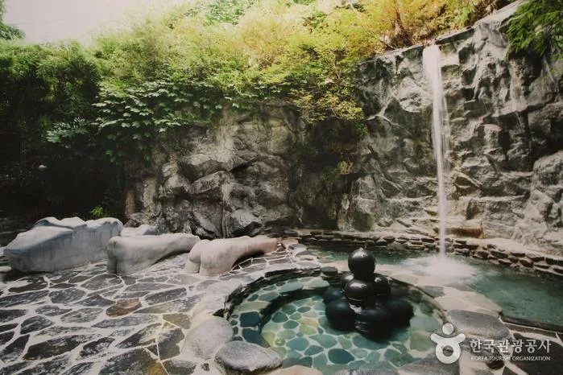
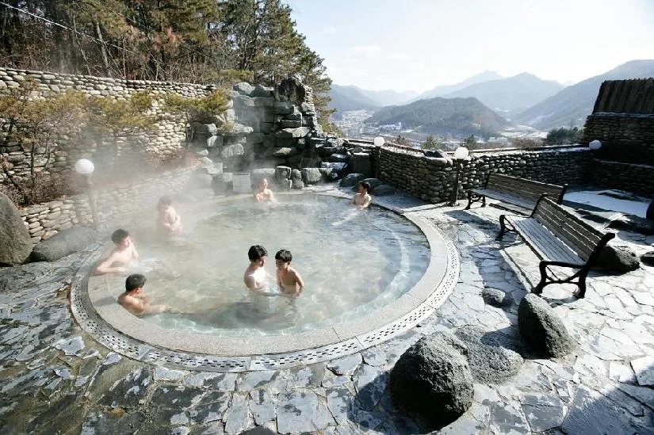
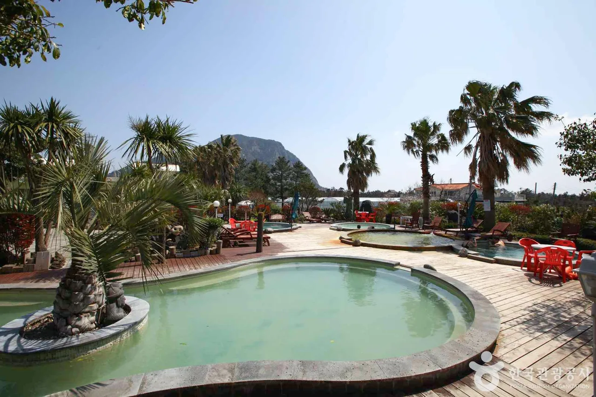

▲ 노천탕. 같은 온천이라도 원천 수온에 따라 체감이 크게 갈린다
온천이라는 말에는 뜨거운 물이 연상됩니다. 그런데 법이 정한 기준은 그보다 훨씬 낮습니다.
온천법은 섭씨 25도 이상의 원수로서 성분 기준에 적합한 것을 온천으로 정의합니다. 25도는 뜨거운 물이 아닙니다. 미지근한 물입니다. 그래서 "온천"이라는 간판만 보고 고르면 기대와 다를 수 있습니다.
1. 첫 번째 기준은 원천 수온이다
온천을 고를 때 별점보다 먼저 볼 숫자가 원천 수온입니다. 25도짜리와 78도짜리가 같은 이름으로 불리기 때문입니다.

▲ 원천 수온이 높으면 가열 없이 그대로 쓸 수 있다 ⓒ 대한민국 구석구석(한국관광공사)
| 온천 | 수온 | 특징 |
|---|---|---|
| 창녕 부곡온천 | 78℃ | 국내 최고 수온 · 유황 + 약알칼리성 |
| 충주 수안보온천 | 53℃ | 지하 250m 암반 · 약알칼리성 |
| 아산 온양온천 | — | 약 1,300년 · 국내 최고(最古) |
| 대전 유성온천 | — | 116개 지구 중 부존량·사용량 최대 |
수온이 높으면 실질적인 차이가 생깁니다. 원천이 뜨거우면 별도 가열 없이 온천수를 그대로 쓸 수 있고, 물을 섞어 온도를 맞추는 과정에서 성분이 덜 희석됩니다. 반대로 원천이 25~30도대라면 데워서 쓰게 됩니다.

▲ 수온이 높은 온천일수록 겨울 노천탕에서 차이가 드러난다 ⓒ 대한민국 구석구석(한국관광공사)
2. 왕이 다니던 곳들
국내 온천에는 기록이 붙어 있습니다. 아산 온양온천은 약 1,300년 역사로 국내에서 가장 오래된 온천이고, 조선시대에 세종·세조·숙종·영조·정조가 휴양과 치료를 위해 머물던 곳입니다.
▲ 온양온천. 약 1,300년 역사로 국내에서 가장 오래된 온천이다 ⓒ 대한민국 구석구석(한국관광공사)
충주 수안보온천도 왕과 얽혀 있습니다. 고려 왕건부터 조선 태조 이성계까지 역대 왕이 즐겨 찾아 왕의 온천으로 불립니다.
▲ 수안보온천. 충주 시가지에서 문경으로 이어지는 국도변에 있다 ⓒ 대한민국 구석구석(한국관광공사)
이 기록이 실용적인 의미도 갖습니다. 오래 이용돼 온 온천지구일수록 숙박과 식당 인프라가 함께 형성돼 있어, 온천만 하고 돌아오는 것이 아니라 1박 코스를 짜기 쉽습니다.
3. 산간형과 도심형은 다른 여행이다
차로 갈 때 온천은 크게 두 갈래로 갈립니다. 도심에 있느냐, 산간에 있느냐입니다.
▲ 유성온천은 대전 원도심에서 서쪽 약 11km에 있는 도심형 온천지구다 ⓒ 대한민국 구석구석(한국관광공사)
도심형은 접근이 쉽습니다. 대전 유성온천은 원도심에서 서쪽으로 약 11km 떨어진 유성구 중심에 있습니다. 주변이 시가지라 주차장과 식당이 갖춰져 있고, 겨울에도 노면 걱정이 적습니다.
▲ 온천 관광특구는 숙박과 식당이 밀집한 하나의 시가지를 이룬다 ⓒ 대한민국 구석구석(한국관광공사)
산간형은 계산이 다릅니다. 충주 수안보는 문경으로 이어지는 국도변에 있고 인근에 월악산·충주호·송계계곡이 있습니다. 풍경은 좋지만 겨울에는 고갯길 결빙이 변수가 됩니다.
📍 겨울 산간 온천으로 갈 때
온천 성수기는 겨울입니다. 그런데 산간 온천지구로 가는 길이 바로 그 시기에 가장 나빠집니다.
· 국도·지방도 고갯길 결빙 여부 확인
· 눈 예보가 있으면 체인 또는 겨울용 타이어
· 숙박 시설 주차장이 경사지인지 확인
· 해가 짧아 하산이 야간이 될 수 있음
4. 사람이 가장 많이 가는 곳
이용객 수를 보면 실제 선호가 드러납니다. 2024년 기준으로 경남 부곡 468만 명, 충남 온양 426만 명, 충남 덕산 342만 명 순이었습니다.
▲ 이용객이 많은 온천지구는 관광특구로 지정돼 별도로 관리된다 ⓒ 대한민국 구석구석(한국관광공사)
1·2위가 각각 수온 1위와 역사 1위라는 점이 눈에 띕니다. 부곡은 78도라는 수온으로, 온양은 1,300년이라는 이름값으로 사람을 모읍니다. 덕산은 온양·도고·아산과 함께 충남 온천지대를 이루며 수도권 접근성이 좋습니다.

▲ 규모가 큰 온천지구는 스파형 시설을 함께 운영한다 ⓒ 대한민국 구석구석(한국관광공사)
이용객이 많다는 것은 양면입니다. 인프라가 갖춰져 있다는 뜻이면서, 주말에는 주차와 대기가 생긴다는 뜻이기도 합니다. 조용한 쪽을 원한다면 순위 밖의 지구를 보는 편이 낫습니다.
5. 어떻게 고를 것인가
선택 기준은 세 가지로 정리됩니다. 원천 수온, 접근 유형, 그리고 함께 묶을 목적지입니다.
| 조건 | 권장 유형 |
|---|---|
| 뜨거운 물 · 겨울 노천 | 고온 원천(부곡 등) |
| 이동 부담 최소화 | 도심형(유성 등) |
| 자연 경관과 함께 | 산간형(수안보 등) — 겨울 노면 주의 |
| 수도권 당일·1박 | 충남 온천지대(온양·덕산·도고) |
| 한적함 우선 | 이용객 순위 밖 지구 |
전국에 온천지구는 116곳입니다. 이름이 알려진 몇 곳 말고도 선택지가 많다는 뜻입니다. 행정안전부가 전국온천현황을 공공데이터로 공개하고 있어, 목적지 인근에 어떤 온천지구가 있는지 직접 찾아볼 수 있습니다.
정리하면 이렇습니다. 온천은 이름이 같아도 25도부터 78도까지 편차가 큽니다. 뜨거운 물을 기대한다면 원천 수온을 먼저 확인하고, 겨울에 산간 온천을 계획한다면 가는 길의 노면을 함께 계산하십시오.